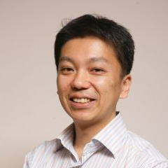

Yasuyuki Matsushita
Senior Director
Microsoft Research Asia – Tokyo
Short bio
Yasuyuki Matsushita received his B.S., M.S. and Ph.D. degrees in EECS from the University of Tokyo in 1998, 2000, and 2003, respectively. From April 2003 to March 2015, he was with the Visual Computing group at Microsoft Research Asia. In April 2015, he joined Osaka University as a professor, and in October 2024 he rejoined Microsoft Research Asia to open its new research lab in Tokyo. His research area includes computer vision, machine learning and optimization.
He is Editor-in-Chief of the International Journal of Computer Vision (IJCV) and is or was on the editorial boards of IEEE Transactions on Pattern Analysis and Machine Intelligence (TPAMI), The Visual Computer, IPSJ Transactions on Computer Vision and Applications (CVA), and the Encyclopedia of Computer Vision. He served or is serving as a Program Co-Chair of PSIVT 2010, 3DIMPVT 2011, ACCV 2012 and ICCV 2017, and as a General Co-Chair of ACCV 2014 and ICCV 2021. He won the Osaka Science Prize in 2022 and the Commendation for Science and Technology by the Minister of Education, Culture, Sports, Science and Technology in 2025. He is a Fellow of the IEEE and a member of IPSJ.